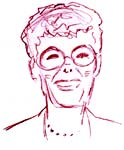

This is an archived copy of History Matters, provided by the Roy Rosenzweig Center for History and New Media. To explore this content in a new interface, visit Who Built America?.


Michele Forman was the 2001 National Teacher of the Year. She is currently teaching history and social studies at Middlebury Union High School in Middlebury, Vermont. She began her teaching career in the Peace Corps in Nepal from 1967–1969.1. When did you start teaching?
I began teaching as soon as I received my B.A. degree in history. I graduated, and in less than two weeks I was in Peace Corps training to teach high school health in Nepal. I taught a variety of health courses, but most of my career I have taught a range of world and U.S. history offerings and some social studies classes. I especially enjoy teaching history because I find it fascinating and essential to all of us in understanding who we are.
But above all, I love teaching high school students. I feel a special affinity for this age group and am fascinated by their intellectual development and creativity, among other things.
2. What are the biggest themes that you try to convey? How do you organize your survey course?
I choose different themes, but I always make sure to include themes that organize history differently. For example, one unit might emphasize political history, another economic, still another social, and another intellectual. Of course these overlap, but I want my students to understand that historians use many lenses to construct interpretations and analyses of our past.
I organize my world history courses chronologically because I find that this approach is helpful to students in trying to make sense of the past. We don’t become slaves to chronology, however; we use it as a framework. I do not use an area studies approach but rather use one that looks at connections across political boundaries.
3. What are your most important goals in teaching the survey course?
As with any course that I teach, I want to help my students love learning, use their curiosity to engage in historical inquiry, be open to new ways of constructing knowledge, and function as historians.
4. What are the most effective assignments that you use in the U.S. survey course?
Each year I alter assignments I’ve used before, discard many others, and add new ones. I try to actively engage my students of all levels in working as historians themselves, analyzing and interpreting the past. I often have students work in small groups, and each group is typically presented with a question or problem (without one right answer) and a batch of varied and contradictory primary and secondary sources. U.S. History provides us with such a rich repository of accessible sources—local, regional, national, and global. I use a mix of sources, including written, material, visual, musical, and oral sources when possible. In solving a problem or answering a question, a student might work first individually, then as a member of a small group, and finally as part of an entire class discussion.
For example, my students undertake a simulation of a hearing on the New York City Triangle Shirtwaist Factory fire of 1911. In teams of two to four, students take on the roles of the factory owner, floor manager, workers, fire department, et al., and research the fire using a broad selection of primary and secondary sources, only some of which I provide. As a class we interview the teams one at a time. Each team attempts to determine blame for the deaths of the workers and defend its own role in the tragedy. Each team is evaluated on its defense, both through its research materials and notes, and on the team’s use of evidence and reasoning during the hearing. In addition each individual student is evaluated on an analytical essay that addresses the same question: Who was to blame? Each essay also recommends changes that could have prevented the fire or lessened the loss of life it caused.
Finally I present information on more recent and strikingly similar tragedies. We talk about groups of workers who are marginalized in our society today and compare them to those who were placed at high risk for little compensation in 1911.
5. What is your most memorable teaching experience?
My earliest experiences as a teacher—teaching high school students in Nepal in the 1960s—stand out most vividly. Everything was new—the country, culture, language, subject (health), and school system—not to mention teaching itself. I learned so much and found enormous rewards in teaching; it was this experience that made me a teacher.
6. How has teaching changed over your career?
Today we know a great deal more about how children and young people develop and learn than we did even ten or fifteen years ago, and this informs our teaching. I believe we have more respect for the potential of our students; we understand that each student is a potentially powerful learner. Further, we know that each learner is unique, and learning is, therefore, idiosyncratic. We are better able to individualize learning.
Our knowledge of good assessment lags behind our understanding of learning, but we are beginning to construct multiple means of assessment that better allow students to demonstrate what they know and have learned. Finally, our teaching and learning are richer because of the cultural and linguistic diversity of our schools.
Interview conducted by Kelly Schrum; completed in June 2002.